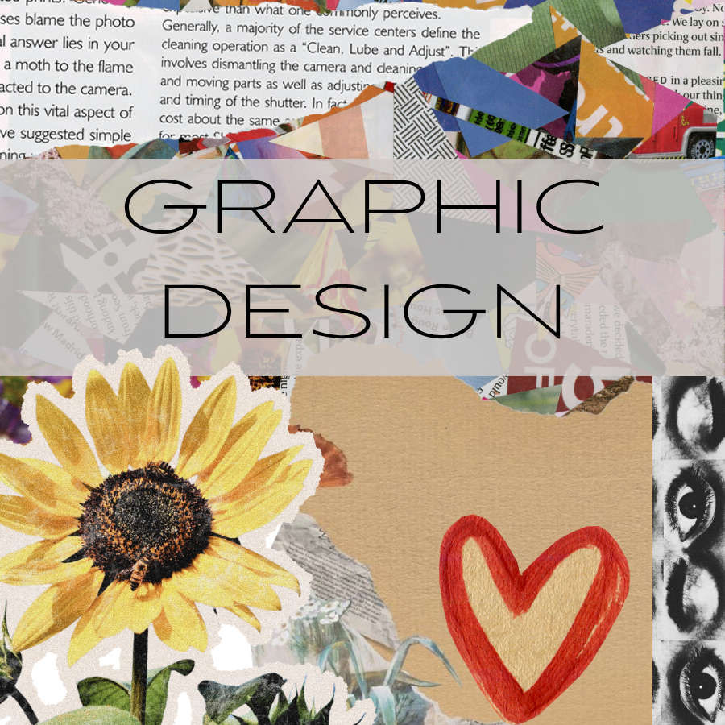
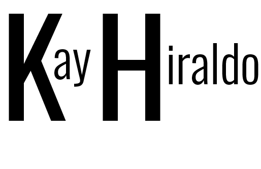
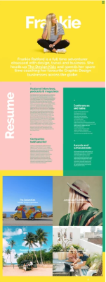
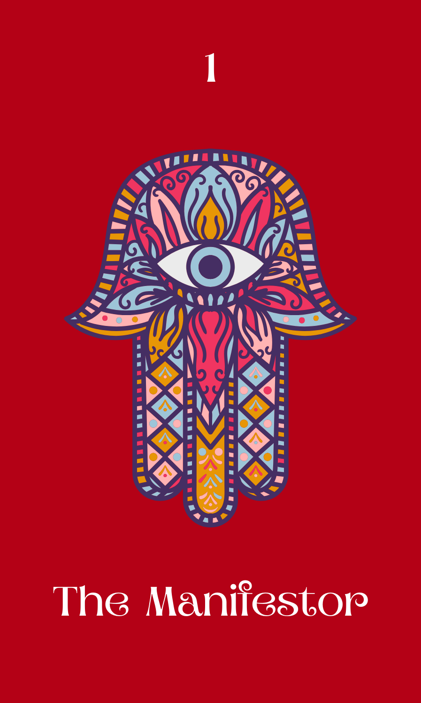
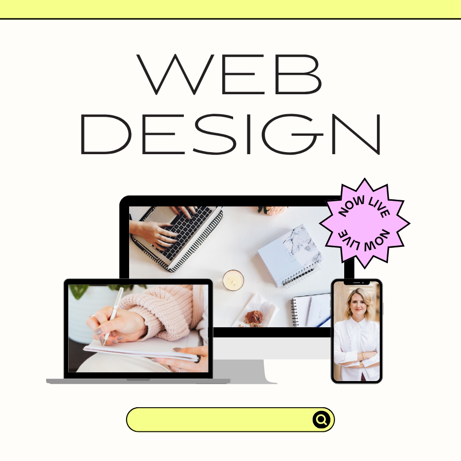
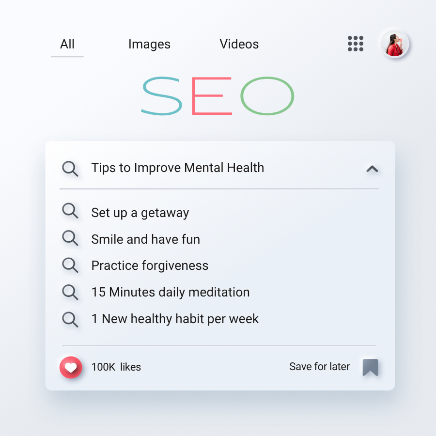

Graphic Design
Graphic Design combining technology and art. Services offered include AI generation, Photo and Video editing, Advertisements, Brand Kits and much more. Tools used include Adobe Creative Suite, among others.

Minimalist Structure, Maximum Impact
Digital Marketing Specialist with over 10 years of experience as a Web and Graphic Designer and 7+ years as a Content and Social Media Manager. I offer a robust combination of creative, strategic, and technical expertise that makes me an asset to any digital team. This website was created using HTML, CSS, and JavaScript.
Providing tailored web and graphic design services along with comprehensive marketing support for B2B, B2C companies, and nonprofit organizations.
Proven ability to design and develop visually engaging, user-centric websites and dynamic digital content that elevate brand identity and boost engagement. Adept at crafting cohesive content strategies, managing successful social media campaigns, and leveraging analytics to inform data-driven decisions. A proactive problem solver with a strong eye for design, proficient in leading design software, and dedicated to delivering impactful, high-quality results.
A selection of projects demonstrating my strategic approach to web design, digital marketing, and content creation, highlighting measurable outcomes.

Objective: the goal of this project was to develop a dedicated digital media hub within the Fund for Women’s Equality (FFWE) website, aimed at consolidating blog posts, videos, and podcast episodes.
Process: to stay within budget I proposed nesting the new hub within the existing FFWE website. I used the Elementor plug-in in WordPress to build the hub pages. My work also included creating a comprehensive branding package for the FFWE, which I implemented across the hub, and launching their official social media accounts on Facebook, Twitter, and Instagram.
Results: The project was completed within budget and launched around April 2022. Although the timeline experienced a small scope creep while awaiting approval from the Board of Directors, subsequent updates were successfully implemented following user feedback after the launch. My contract with the FFWE ended June 2023, but the website remains and can be viewed here: Equal Voice Equal Future

Objective: this project originated as my final assignment for my Graphic Design degree from Arizona State University. The primary objective was to demonstrate my proficiency in HTML, CSS, and JavaScript.
Process: I was inspired by a previous iteration of Frankie Ratford's website, which is the featured image for this case study. I began the project by creating a GitHub repository and developing the page's wireframe. After compiling the website content into a separate document, I started development by first coding the HTML structure in Visual Studio Code. Following content and structure finalization, I focused on CSS styling. The page was completed with JavaScript, which I used to implement features like the Game components and the light/dark mode functionality.
Results: my work was completed within the timeframe, being that this was my final assignment for my degree. The current version of this portfolio website is the result.

Objective: For my spiritual business, Blessed Manifestation, which is hosted on WordPress, I developed an interactive feature where users can pull cards from my custom oracle deck, the “Manifestor Oracle.” My goal was to create an API for this functionality and integrate it into the site using the JavaScript skills I’ve learned.
Process: I had to develop a REST API that provides card data (using JSON) from the Manifestor Oracle deck, including information such as each card’s image, name, and meaning. To build the dataset, I created a comprehensive JSON file that listed all 80 oracle cards individually. In addition to writing the descriptions, I included meaningful and descriptive text for accessibility, such as alternate text (alt text) for each image to make the content more inclusive for screen reader users. I also had to rename all image files to match the file names listed in the JSON file so that the API could fetch them correctly from the GitHub repository. Once the data and assets were organized, I integrated the API from GitHub into the Blessed Manifestation website using JavaScript, allowing users to pull cards dynamically from the Manifestor Oracle deck directly on the site.
Results: I chose to include only the card name, image, and description, along with descriptive alt text to maintain accessibility for assistive devices. The page can be viewed here.

Graphic Design combining technology and art. Services offered include AI generation, Photo and Video editing, Advertisements, Brand Kits and much more. Tools used include Adobe Creative Suite, among others.

Clean, responsive, accessible, and affordable websites. Platforms include WordPress, Wix, and Squarespace, among others.

I can also help you with tried and true SEO tactics for your websites and social media content, to increase traffic, engagement, and monetization.
View my full Portfolio on Behance
I created this game using JavaScript.
I'm thinking of a number between 1 and 10. Can you guess what it is?
You can email me at: soultechcreative@gmail.com or find me on LinkedIn